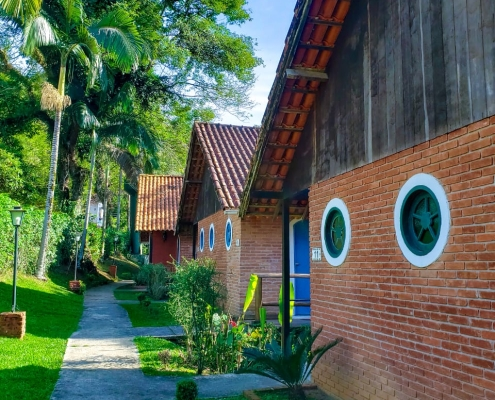
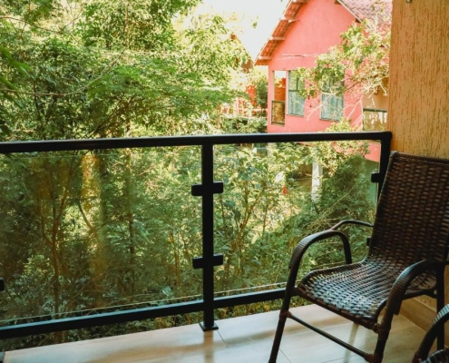

A Pousada Penedo é tradicional. Nasceu na década de 30 e se confunde com a história da região e da fundação de Penedo. Ela pertenceu a ninguém menos que Toivo Uuskallio, fundador da colônia finlandesa. A hospitalidade sempre foi a sua marca registrada. Ele e outros colonos, recebiam em suas próprias casas os hóspedes vindos do Rio e de São Paulo.
Nosso salão tem uma mesa de bilhar, Totó e Tênis de mesa, que são a diversão de todos. Temos também Acerte ao Alvo, Xadrez, Dominó, Baralho, etc… você e sua família vão se divertir!
Queremos trazer você para curtir a natureza, mas sem desconectá-lo do mundo. Disponibilizamos Wi-Fi gratuito em toda extensão da pousada.
Quer contemplar a Natureza, relaxar e deixar o tempo passar? Nada melhor que nossa varanda. Localizada na área central da pousada, cercada de muitas plantas, com vista da piscina e rede de balanço, você poderá passar muitas horas agradáveis nesse ambiente.
Nossa piscina fica em meio a natureza com um belo Mirante para admiração da Mata, pássaros, flores e borboletas.
Somos uma pousada em meio a natureza da mata Atlântica! Com muitas árvores, pássaros, flores e borboletas. Lugar tranquilo para descansar e respirar ar puro. Ambiente familiar e aconchegante! Com mais de 25 anos de atuação, a Pousada Mirante do Penedo tem vários motivos para você e sua família desfrutarem de nossas instalações.
Reservar

A nossa pousada, a casa de Toivo, foi escolhida com o rigor e o critério de quem escolhe o local onde pretende residir. Por isso, está estrategicamente situada na parte alta de um terreno cortado por um rio. E, claro, cercado pela farta vegetação e pássaros da região. Até hoje mantemos as tradições finlandesas. Receber com o prazer de quem hospeda os amigos. Passar pelo Pousada Penedo é voltar no tempo. Ter contato com os primórdios da vocação turística da região; ter contato com o vasto material, como: livros, históriase documentos da época e decoração do início do século passado. Isto é o que chamamos de "preservar a essência".